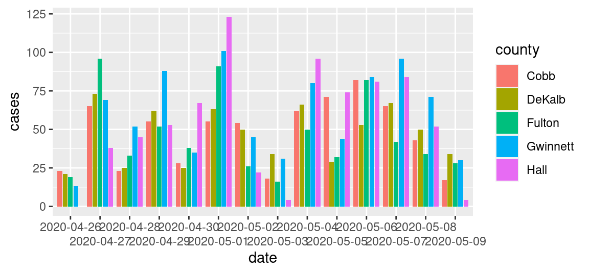
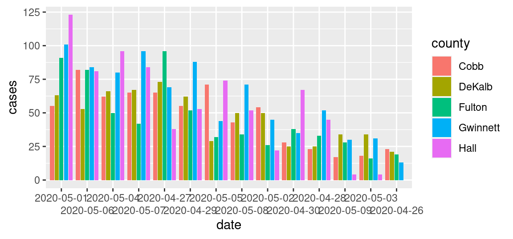
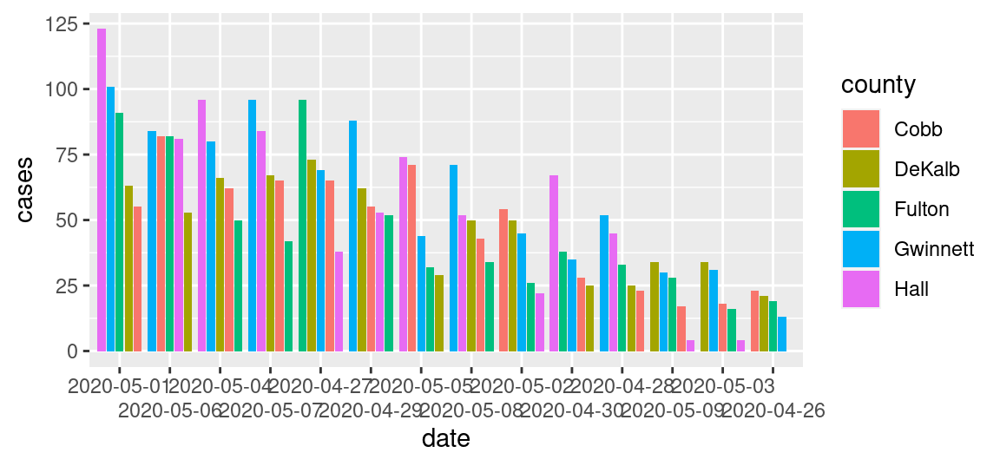
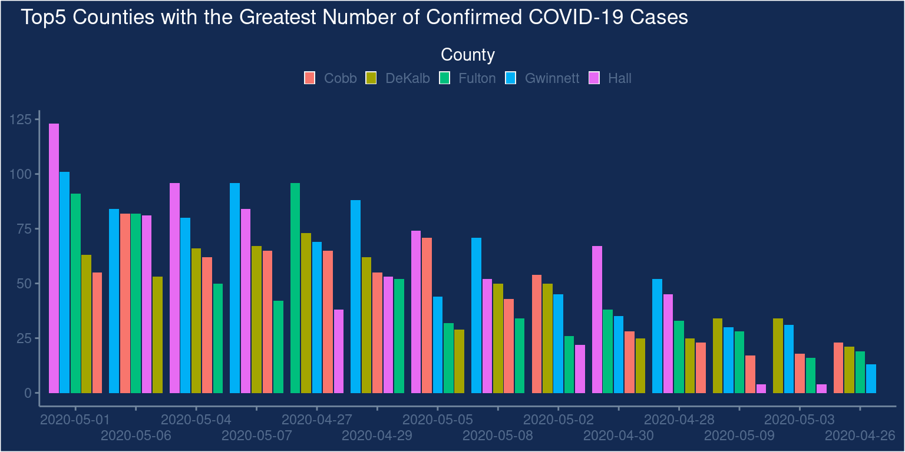

Tutorial: How to give the wrong impression with data visualization
Background and aim
Referring to the supposed trade-off between public health and economic performance in the context of the SARS-CoV-2 pandemic, Georgia Governor Brian Kemp has “reopened the state on April 24 [2020], citing a downward trend of COVID-19 cases being reported by the Georgia Department of Health […] Georgians have been relying on this data (number of cases, hospitalizations and deaths in their areas) to determine whether or not it’s safe for them to go out.” (FIRSTCOAST NEWS) It later turned out that there was no downward trend at all but that the data on Covid cases was intentionally visualized in such a way to give the impression of a downward trend. In this tutorial, we aim to replicate the doctored downward trend visualization, using the original data and ggplot2.1
Data import and preparation
The original raw data is provided in a zip-file (compressed file). The code chunk below shows some tricks of how to download and import data from an online zip-file as part of a simple data analytics script. First, we generate a temporary file with tempfile(). We then download the compressed zip file containing the Covid-data to the temporary file via download.file(DATA_URL, destfile = tmp). Finally, we use unzip(tmp, files = "epicurve_rpt_date.csv" ) in order to decompress the one CSV-file in the zip-file we want to work with. After that, we can simply import the CSV-file the usual way (with the read_cav() function).
# SET UP ----------------# load packageslibrary(tidyverse)library(ggplot2)# fix varsDATA_URL <-"https://ga-covid19.ondemand.sas.com/docs/ga_covid_data.zip"COUNTIES <-c("Cobb", "DeKalb", "Fulton", "Gwinnett", "Hall")MIN_DATE <-as.Date("2020-04-26")MAX_DATE <-as.Date("2020-05-09")# FETCH/IMPORT DATA -----------------------# create a temporary file to store the downloaded zipfiletmp <-tempfile()download.file(DATA_URL, destfile = tmp)# unzip the file we needpath <-unzip(tmp, files ="epicurve_rpt_date.csv" )# read the datacases <-read_csv(path)# inspect the datahead(cases)
Once the data is imported, we select/filter the part of the dataset used in the original bar plot. Note the tidyverse-functions introduced in previous lectures to prepare an analytic dataset out of the raw data efficiently. At one point, we use the order()-function to order the observations according to the report date of covid cases. This is done when displaying the frequency of cases over time. This way, in the following plot, the x-axis serves as a time axis, displaying the date of the corresponding reported case numbers from the beginning of the observation period on the left to the end of the observation period on the right).
# only observations in the five major counties and during the relevant dayscases <-filter(cases, county %in% COUNTIES, MIN_DATE <= report_date, report_date <= MAX_DATE)# only the relevant variablescases <-select(cases, county, report_date, cases)# order according to datecases <- cases[order(cases$report_date),]# we add an additional column in which we treat dates as categoriescases <-mutate(cases, date=factor(report_date))
Plot
First, we show what the actual (honest) plot would essentially look like.
ggplot(cases, aes(y=cases, x=date, fill=county)) +geom_bar(position =position_dodge2(), stat ="identity") +scale_x_discrete(guide =guide_axis(n.dodge =2)) # this avoids overlapping of x-axis labels (and is similar to what is done in the original plot)

There is no obvious downward trend visible. Now, let us look at what steps are involved in manipulating the visualization in order to give the wrong impression of a downward trend. Importantly, all the manipulation is purely done via the data plotting. We do not touch/manipulate the underlying data (such as removing observations or falsifying numbers).
Two things become apparent when comparing the original plot with what we have so far. First, the order of days on the X-axis is not chronological but seems to be based on the total number of cases per day. Second, the order of the bars of a given day does not follow the alphabetical order of the county names but the number of cases in each of the counties. Let’s address the two aspects one at the time. To change the order on the x-axis, we have to re-order the factor levels in date.
cases2 <-mutate(cases, date=fct_reorder(date, cases, sum,.desc =TRUE)) # re-order the dates based on the total number of cases per date.ggplot(cases2, aes(y=cases, x=date, fill=county)) +geom_bar(position =position_dodge2(), stat ="identity") +scale_x_discrete(guide =guide_axis(n.dodge =2)) # this avoids overlapping of x-axis labels (and is similar to what is done in the original plot)

Note that the number of cases is not exactly the same as in the original. Quite the reason for this is that the numbers have been updated during May. Given that the overall pattern is very similar, there is no reason to believe that the actual numbers underlying the original figure had been manipulated too. Now, let us address the second aspect (ordering of bars per date). For this, we use the group aesthetic, indicating to ggplot that we want the number of cases to be used to order the bars within each point in time (date). Setting position_dodge2(reverse=TRUE) simply means we want the bars per date to be ordered in decreasing order (per default, it would be increasing; try out the difference by changing it to position_dodge2(reverse=FALSE) or simply position_dodge2()).
ggplot(cases2, aes(y=cases, x=date, fill=county, group=cases)) +geom_bar(aes(group=cases), position =position_dodge2(reverse=TRUE), stat ="identity") +scale_x_discrete(guide =guide_axis(n.dodge =2)) # this avoids overlapping of x-axis labels (and is similar to what is done in the original plot)

This already looks much more like the original plot.
Cosmetics: theme
Finally, we tweaked the plot’s theme to make it look more similar to the original. The following code is a first shot at addressing the most obvious aspects to make the plot more similar to the original. More steps might be needed to make it essentially identical (consider, for example, the color scheme of the bars). This part of the tutorial is a nice illustration of how versatile the ggplot2-theme()-function is to tweak every cosmetic detail of a plot.
ggplot(cases2, aes(y=cases, x=date, fill=county, group=cases)) +geom_bar(aes(group=cases), position =position_dodge2(reverse=TRUE), stat ="identity") +ggtitle("Top5 Counties with the Greatest Number of Confirmed COVID-19 Cases") +scale_x_discrete(guide =guide_axis(n.dodge =2)) +# this avoids overlapping of x-axis labels (and is similar to what is done in the original plot)guides(fill=guide_legend(title ="County",title.position ="top",direction ="horizontal",title.hjust =0.5)) +theme(legend.position ="top",plot.title =element_text(colour ="white", hjust =-0.1),legend.key.size =unit(0.5,"line"),panel.grid.major =element_blank(),panel.grid.minor =element_blank(), panel.background =element_rect(fill="#132a52"),legend.background =element_rect(fill="#132a52"),plot.background =element_rect(fill="#132a52"),legend.text =element_text(colour ="#536b8d"),legend.title =element_text(colour ="white"),axis.text =element_text(colour ="#536b8d"),axis.ticks =element_line(colour ="#71869e"),axis.line =element_line(colour="#71869e"),axis.title =element_blank())

Footnotes
Note that the original data is not 100% identical with the data used in the original plot. The reason is that Covid-numbers are updated/corrected over time, and the original plot uses very recent data.↩︎